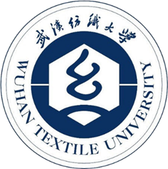

Qianrui Liu
Summary
I'm a university student major in Data Science who has a well-rounded experience in deep learning, web development
and so on.
Education

Senior at Wuhan Textile University
Project Experience
- Medical Image Segmentation Network Development
June 2023 - July 2024
- Led research from conceptualization to independent code implementation (PyTorch, NumPy, Matplotlib,
TensorBoardX).
- Refined innovative ideas through rigorous experimentation and optimization with a peer.
- Drafted parts of paper, published as third author in SCI Q1 journal JBHI.
- Cell Multi-Omics Visualization Mapping
July 2024 - April 2025
-
Developed and optimized code (PyTorch, Pandas, R) for a US-led multi-omics project.
- Ensured project continuity by facilitating knowledge transfer and participating in weekly meetings.
- Completed the majority of practical implementation for the project.
Skills
- Japanese: ⭐️⭐️⭐️⭐️⭐️
- English:️ ⭐️⭐️⭐️⭐️
- Deep learning:️ ⭐️⭐️⭐️⭐️
- Web Development:️️ ⭐️⭐️⭐️
Awards and Certifications
- IELTS 6.5 (L7.5 R7 W6 S6) (2025.6)
- Japanese JLPT N1 148 (2024.7)
- English CET-6 596 (2024.6)
- Second-class Scholarship (2024.10)
- Team Third Prize in Programming Ladder Competition (2023.11)
- First-class Scholarship (2023.10)
- Second Prize in University Student Algorithm Competition (2023.09)
- Bronze Award in Hubei Provincial CCPC (2023.05)
Other